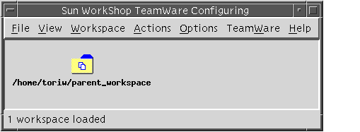
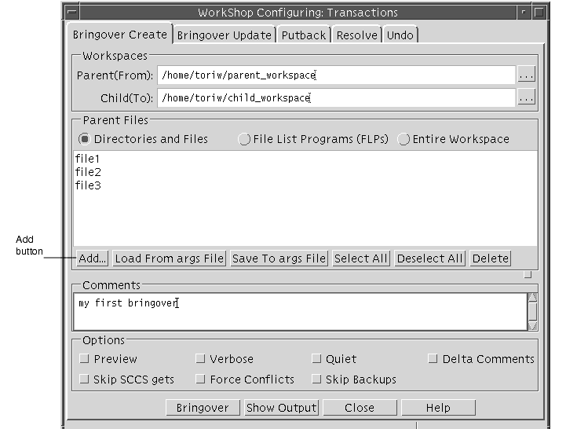
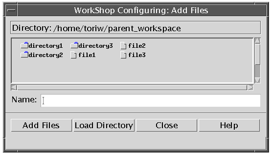
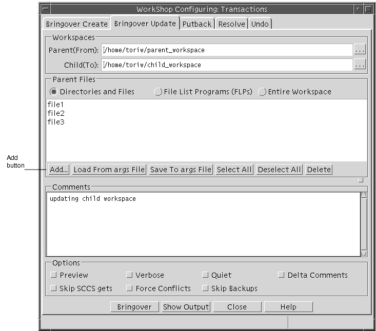
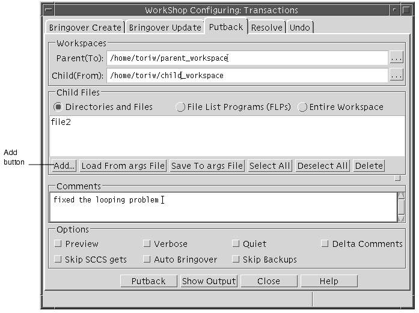
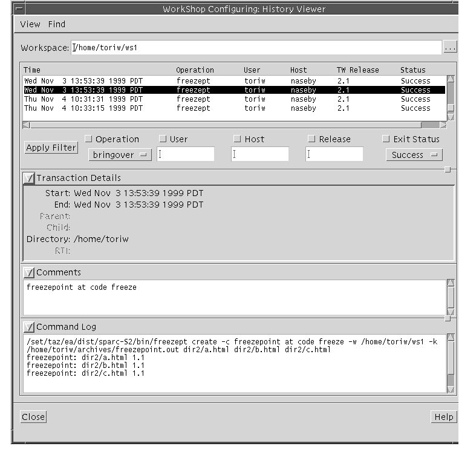

| Sun WorkShop TeamWare User's Guide |
Managing Workspaces
To use Sun WorkShop TeamWare's features, you must put your files and directories into TeamWare workspaces. A workspace is a specially designated directory, its subdirectories, and the files contained in those directories. Using Sun WorkShop TeamWare tools, you manage the files in the workspace and the relationships with other workspaces. Use the Configuring tool to view workspaces, their relationships, and to execute commands on workspaces. This chapter shows you how to perform these basic tasks in Configuring:
- Starting Configuring
- Creating a Parent Workspace
- Creating Child Workspaces
- Propagating Changes Across Workspaces
- Undoing Changes to a Workspace
- Renaming or Moving Workspaces
- Deleting or Reconverting Workspaces
- Viewing Workspace History
Starting Configuring
To start Configuring, type the following at a command line:
twconfig &If you are running Sun WorkShopTM, you can start TeamWare Configuring by:
- Clicking the TeamWare button on the tool bar in the Sun WorkShop main window
- Selecting TeamWare from the Tools menu
Note – Because Sun WorkShop product components and man pages do not install into the standard/usr/bin/and/usr/share/mandirectories, you must change yourPATHandMANPATHenvironment variables to enable access to Sun WorkShop TeamWare tools. See Access to Sun WorkShop Development Tools.
When you start Sun WorkShop TeamWare Configuring, the Configuring window (see FIGURE 2-1) opens.

FIGURE 2-1 Configuring Window With Parent Workspace LoadedTABLE 2-1 describes the Configuring window menus:
See the Sun WorkShop TeamWare online help for a complete list of these menus and their functions. For information on how to customize Configuring, see Customizing Configuring Using Tool Properties.
Creating a Parent Workspace
When you begin to use the Sun WorkShop TeamWare code management tools, you can start a new project or import existing project files into Sun WorkShop TeamWare. To do this, you must set up workspaces.
Start a project by creating a top-level (parent) workspace. You create a child workspace from this parent workspace by doing a special copy of the files called a bringover. You make changes in your own child workspaces, and later integrate your files with changes made by other developers. When you integrate changes, it is called a putback.
When you create a workspace, Sun WorkShop TeamWare creates a subdirectory, named
Codemgr_wsdata, that stores information about the files in the workspace. There are two ways to create a parent workspace:
- Create an empty workspace and then populating it with a hierarchy of new directories and files
- Create a workspace from an existing hierarchy of files
Note – If you have existing project files, you should know the location (path name) of those files before you begin using Configuring.
Creating an Empty Workspace
To create a new empty workspace:
1. Start Configuring.2. Choose FileCreate Workspace.
3. In the Workspace Directory text box, type a workspace name.
- If the directory does not already exist, Sun WorkShop TeamWare will create it.
4. Click OK.
- TeamWare Configuring creates a workspace in the directory you have specified and creates an icon for it in the Configuring window.
- When you create files, you will have to check the files in to the workspace. See Adding Files to a Workspace.
Creating a Workspace from Existing Files
If you have a directory containing the files that you want to make into a workspace, do the following to create a new workspace:
1. Start Configuring.2. Choose File3. In the Workspace Directory text box, type the path name to the directory that contains the files.4. Click OK.
- TeamWare Configuring creates a workspace in the directory you have specified and creates an icon for it in the Configuring window.
5. Check in the files using Sun WorkShop TeamWare Versioning.
- Sun WorkShop TeamWare recognizes only files that are under SCCS version control. If your files are not already under SCCS version control, see Adding Files to a Workspace.
Creating Child Workspaces
After you create a parent workspace, team members will need to create their own child workspace with copies of the parent workspace files. Configuring transactions revolve around these parent-child relationships: bring over files from the parent workspace; change files in the child workspace; put back files to the parent workspace.
1. Start Configuring.2. If the workspace from which you must obtain your files is not automatically loaded, choose File3. Select the workspace in the Load Workspaces dialog box and click Load Workspaces.
- The parent workspace is loaded and its icon appears in the Configuring window.
4. Choose Actions
- This opens the Bringover Create Tab in the Transactions dialog box (see FIGURE 2-2).
FIGURE 2-2 Transactions Dialog Box: Bringover Create Tab5. To select the directories and files to bring over, do one of the following:
- Accept the default ``
./'' to bring over all files- Click the Entire Workspace button to bring over all files
- Click the Add button to display the Add Files dialog box where you can add or delete specific files.
- In the Add Files dialog box (FIGURE 2-3), navigate to the files you want to include.
- Navigate through the file system hierarchy by double-clicking on any directory icon. Double-click on the directory icon to move hierarchically upward in the file system. To move directly to a directory, type its path name in the Name text box and click the Load Directory button. You cannot move outside of the parent workspace hierarchy.
FIGURE 2-3 Add Files Dialog Box
- Select files and directories.
- Click any file or directory icon. You can Shift-click to select multiple files and directories.
- Click Add Files to add the files to the Bringover Create tab.
- Click Close.
6. In the Bringover Create tab, click the Bringover button.
- A Transaction Output window displays the status of the bringover and indicates when the bringover is complete.
You now have a child workspace from which you can check out files, make changes to them, and put back to the parent workspace. To learn how to check out files, see Checking Out a File. To learn how to put back files to a parent workspace, see Propagating Changes Across Workspaces.
Propagating Changes Across Workspaces
After you have created a hierarchy of workspaces, it is important to keep the contents synchronized. All Configuring transactions are performed from the perspective of the child workspace; hence the Bringover transaction "brings over" groups of changes from the parent to the child workspace. Inversely, the Putback transaction "puts back" changes from the child workspace to its parent.
Use the Bringover Update transaction to update changes from the parent workspace to a child workspace. Use the Putback transaction to take changes in a child workspace and put them in a parent workspace. Putting the files back into the parent makes those changes available to other members of the team.
Updating a Child Workspace (Bringover Update)
To initiate a Bringover Update transaction:
1. In Configuring, load your workspace with File2. Click on your workspace to select it.3. Choose Actions
- This displays the Bringover Update tab of the Transactions dialog box (see FIGURE 2-4).
- The parent and child names are automatically inserted in the Workspaces text boxes. You can insert a new path name, and edit the text box at any point.
FIGURE 2-4 Transactions Dialog Box: Bringover Update Tab4. To select the directories and files to bring over, do one of the following:
- Accept the default ``
./'' to bring over all files- Click the Entire Workspace button to bring over all files
- Click the Add button to display the Add Files dialog box where you can add or delete specific files.
- In the Add Files dialog box (see FIGURE 2-3), navigate to the files you want to include.
- Navigate through the file system hierarchy by double-clicking on any directory icon. Double-click on the directory icon to move hierarchically upward in the file system. To move directly to a directory, type its path name in the Name text box and click the Load Directory button. You cannot move outside of the parent workspace hierarchy.
- Select files and directories.
- Click any file or directory icon. You can Shift-click to select multiple files and directories.
- Click Add Files to add the files to the Bringover Update tab.
- Click Close.
5. In the Bringover Update tab, click the Bringover button.
- A Transaction Output window displays the status of the bringover and indicates when the bringover is complete. You now have the most recent copies of the files from the parent workspace in your child workspace.
Note – If you want to preview your transaction, click the Preview option to verify your transaction before you transfer any files.
Putting Back Changes to a Parent Workspace
To initiate a Putback transaction:
1. In Configuring, load your workspace with File2. Click on your workspace to select it.3. Choose Actions
- This displays the Putback tab of the Transactions dialog box (see FIGURE 2-5).
- The names are automatically inserted in the Workspaces text boxes. You can insert a new path name and edit the text box at any point.
FIGURE 2-5 Transactions Dialog Box: Putback Tab4. To select the directories and files to put back, do one of the following:
- Accept the default ``
./'' to bring over all files- Click the Entire Workspace button to bring over all files
- Click the Add button to display the Add Files dialog box where you can add or delete specific files.
- In the Add Files dialog box (see FIGURE 2-3), navigate to the files you want to include.
- Navigate through the file system hierarchy by double-clicking on any directory icon. Double-click on the directory icon to move hierarchically upward in the file system. To move directly to a directory, type its path name in the Name text box and click the Load Directory button. You cannot move outside of the parent workspace hierarchy.
- Select files and directories.
- Click any file or directory icon. You can Shift-click to select multiple files and directories (see FIGURE 2-3).
- Click Add Files to add the files to the Putback tab in the Transactions dialog box (FIGURE 2-5).
- Click Close.
5. Type a comment that describes the Putback transaction.
- This comment is included in the Workspace History and can be up to 8 Kilobytes long.
6. In the Putback tab, click the Putback button.A Transaction Output window displays the status of the putback and indicates when the putback has completed. You now have synchronized the contents of your files and the files in the parent workspace.
Note – When you try to perform a putback on a file that you have changed in your child workspace, but which has already been changed in the parent workspace, Configuring prevents you from putting back the file until you have resolved the differences between them. See Chapter 6.
Action taken during the Putback transaction can be reversed using the Undo transaction. Refer to the next section, "Undoing Changes to a Workspace," for details.
Undoing Changes to a Workspace
You can reverse (undo) the action of the most recent Bringover or Putback transaction in a workspace by using the Undo tab in the Transactions dialog box. Undo the Putback or Bringover transaction in the destination workspace (the one in which the files are changed). You can undo a Bringover or Putback transaction as many times as you want until another Bringover or Putback transaction occurs in that workspace; only the most recent Bringover or Putback transaction can be undone.
If a file is updated or found to be in conflict by the Putback or Bringover transaction, the Undo transaction restores the file to its original state. If a file is "new" (created by the Bringover/Putback transaction), then it is deleted.
To initiate an Undo transaction:
1. Specify the workspace in which to reverse the transaction.
- If you select a workspace icon on the Workspace Graph pane prior to displaying the Undo layout, its name is automatically inserted in the Workspace Directory text box. At any point, you can insert a new path name followed by a Return, or change the text box.
2. Click Undo to initiate the transaction.Renaming or Moving Workspaces
Configuring does all the administrative work of keeping track of workspaces, files and their relationships. It is important that you use Configuring to rename, move or delete workspaces so it can maintain workspace histories and the relationships between workspaces.
Note – Use these procedures to rename or move workspaces, rather than with the the Common Desktop Environment (CDE) FileManager or the SunOSTM operating system commandmv. Using the procedures detailed below will maintain the parent-child relationships of workspaces.
Rename or move workspaces with the move command available from the Configuring Workspace menu.
To rename or move a workspace:
1. Load the workspace with File2. Select the workspace by clicking on it once.3. Choose Workspace4. In the Rename dialog box, type in the new name or location for your workspace.5. Click OK.The workspace with the new name or location appears in the Configuring window.
Deleting or Reconverting Workspaces
Use these procedures to delete or reconvert workspaces, rather than using Operating System commands.
Deleting a Workspace
1. Load the workspace with File2. Select the workspace by clicking on it once.
- You can Shift-click to select multiple workspaces.
3. Choose Workspace4. Click OK in the Delete Confirmation dialog box.The workspace icon disappears in the Configuring window.
Reconverting a Workspace
To convert a Sun WorkShop TeamWare workspace back into a regular directory:
1. Load the workspace with File2. Select the workspace by clicking on it once.
- You can Shift-click to select multiple workspaces.
3. Choose Workspace4. Select the Delete Codemgr_wsdata Directory Only button.5. Click OK in the Delete Confirmation dialog box.The workspace icon disappears in the Configuring window, but the files remain intact.
Viewing Workspace History
Configuring transactions are logged in the workspace history file.
- Commands that affect a single workspace are logged only in that workspace.
- Commands that affect more than one workspace are logged in both the source and destination workspaces. Although command entries are logged in both the source and destination workspaces, the list of changed files is entered only in the destination directory.
You can view the contents of the workspace history file to track or reconstruct changes that have been made to a workspace over time. Command log entries consist of the underlying command-line entries. If you have any questions about the meaning or syntax of a command, refer to its
manpage for details. For information about accessing man pages, see Chapter 11.To view the history of a workspace:
1. From the Configuring Window, click on a workspace to select it.2. Choose Workspace
- The Workspace History Viewer opens (see FIGURE 2-6).
Changing the Workspace History Viewer Display
- You can customize the following in the Workspace History Viewer:
- How much transaction information is included
- In what order the transactions appear
- Which items are included
By default, the status of the transaction is the only transaction information displayed in the Workspace History Viewer. TABLE 2-2 shows the categories for the Workspace History Viewer Display.

FIGURE 2-6 Workspace History ViewerAdding or Removing Transaction Information From the Workspace History Viewer
To add or remove transaction information:
1. In the Workspace History Viewer Window, choose View2. In the Workspace History Viewer Options dialog box, check the items in the Display section that you want included in or removed from the Workspace History report.3. Click OK.
- The Workspace History Viewer Options dialog box disappears, and the details you have selected are included in the Workspace History Viewer window.
Sorting Transaction Information in the Workspace History Viewer
By default, transactions are sorted chronologically, with the most recent transactions at the bottom.
1. In the Workspace History Viewer Window, choose View2. In the Workspace History Viewer Options dialog box, click one of the Sort By radio buttons.3. Click OK.
- The transaction information is sorted based on the category you selected.
Adding Filtering Options to the Workspace History Viewer
You can filter the Workspace History transaction information by Operation, User, Host, Release, or Exit Status. By default, all transactions appear in the Transaction Information pane and the only filter option displayed is User. If the category you want to use to filter transactions does not appear in the Workspace History Viewer, you must add the option.
To add filter options to the Workspace History Viewer window:
1. In the Workspace History Viewer Window, choose View2. In the Options dialog box, check the items in the Filter section that you want to use as a filter.3. Click OK.
- The items you selected appear in the Workspace History Viewer window.
Filtering Transaction Information From the Workspace History Viewer
To filter transaction information:
1. In the Workspace History Viewer Window, choose View2. Click the filter check box above the filter(s) you want to use: click Operation, User, Host, Release or Exit Status.
- You can select more than one filter.
3. Type the user, host, or release you want to filter by, or select an Operation or Exit Status.4. Click Apply Filter.Searching for Transactions
If you want to find a particular transaction, you can search for text strings in the comments or command log.
1. In the Workspace History Viewer, choose Find2. In the Search Comments dialog box, type a search string.3. Click Find Next.If Configuring finds the search string, it will highlight it in the History Viewer Comments pane.
1. In the Workspace History Viewer, choose Find2. In the Search Command Log dialog box, type a search string.3. Click Find Next.If Configuring finds the search string, it will highlight it in the History Viewer Command Log pane.
|
Sun Microsystems, Inc. Copyright information. All rights reserved. Feedback |
Library | Contents | Previous | Next | Index |